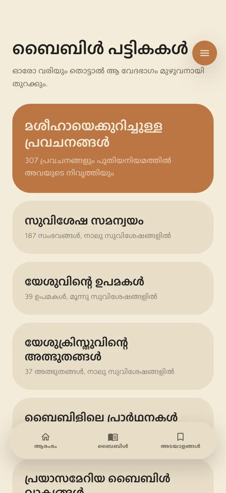
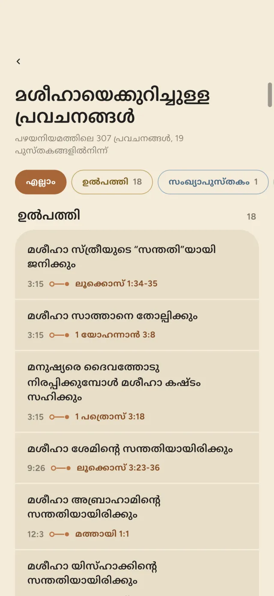
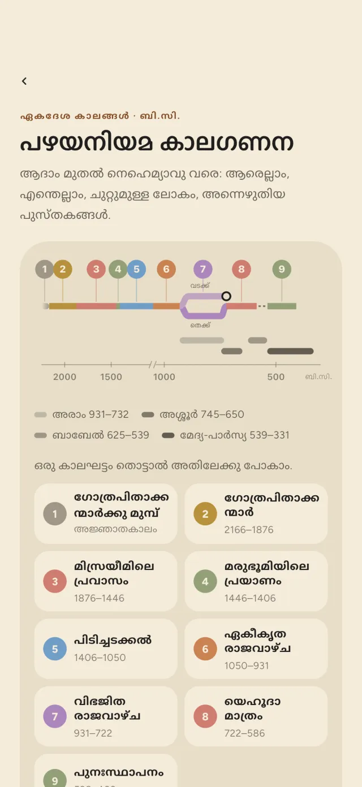
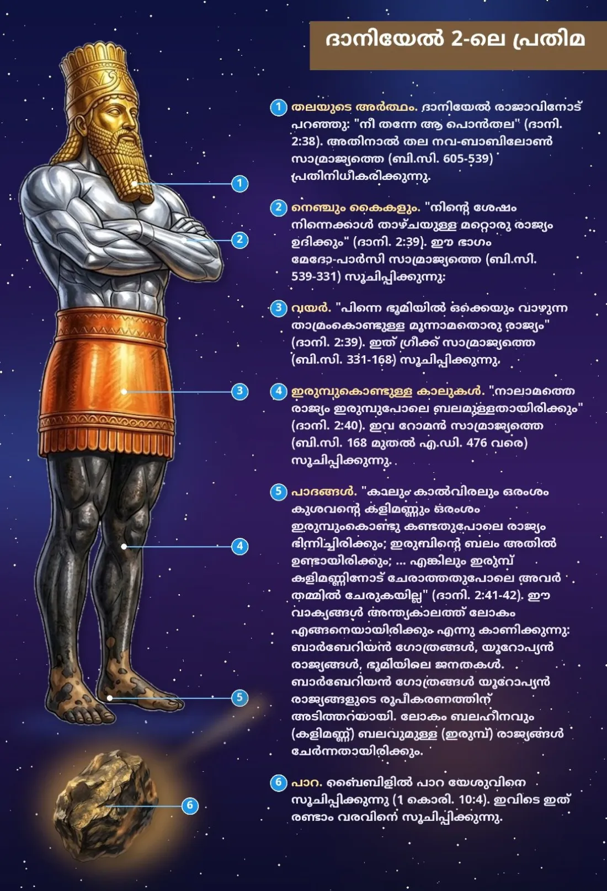
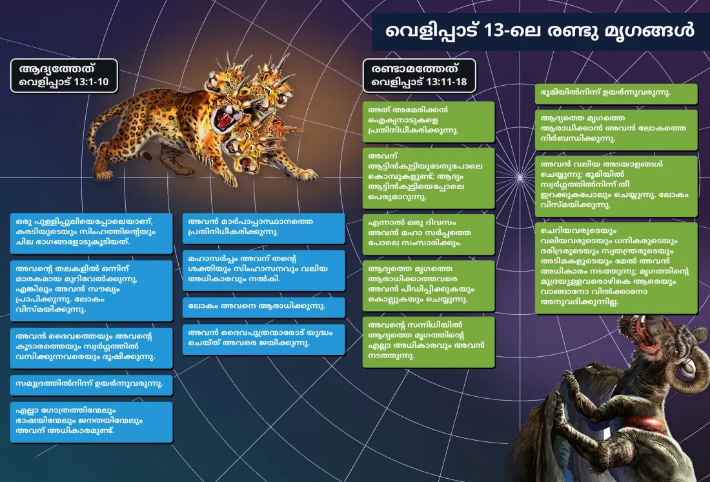
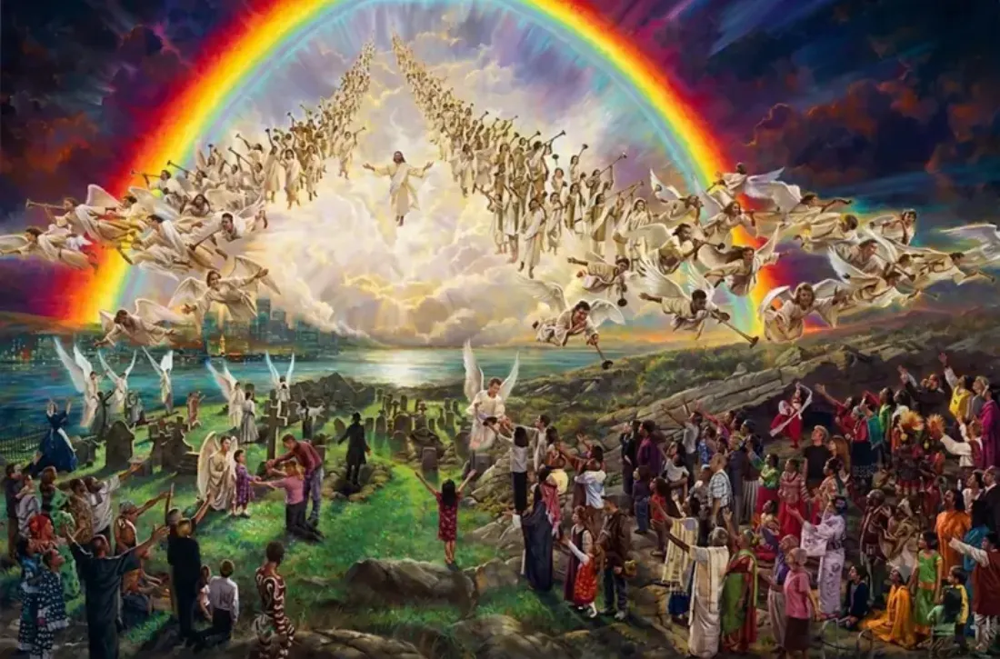
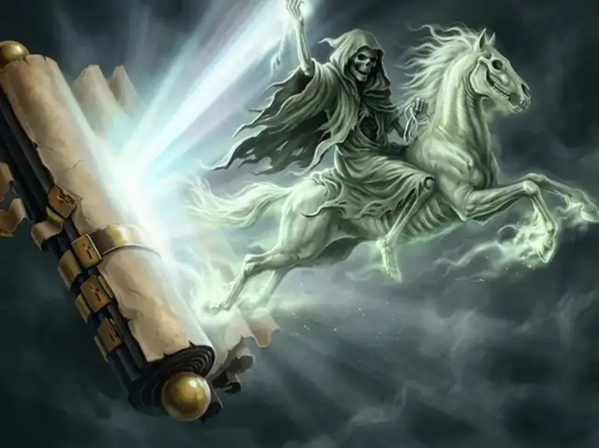

The 1910 Bible, set like a book.
Sathyavedapusthakam in a calm, generously spaced reader. Tap a verse and everything that surrounds it opens.
The Malayalam Bible, സത്യവേദപുസ്തകം 1910, with the cross-references, Ellen G. White commentary and chain studies a study Bible puts around the text. All of it lives on your phone.
Sathyavedapusthakam in a calm, generously spaced reader. Tap a verse and everything that surrounds it opens.
Cross-references and translation notes, grouped the way a printed study Bible groups them. Fold them open, or jump straight into the full chapter.
The SDA Bible Commentary and Ellen G. White’s own references, with the commentary in Malayalam and the English one tap away.
Sixty-five chain studies, each with its own colour. Move from one text to the next and watch your progress fill in.
A warm dark theme, adjustable type, and every mark you make stored on your own device.
A study Bible’s apparatus, rebuilt for a phone: slow to put down, quick to move around.
307 prophecies of the Messiah with their fulfilments. Plus 39 parables of Jesus and 82 prayers by 50 people. Touch a row and the whole passage opens.


A symbol, what it stands for, and every place Scripture uses it.
From Canaan to Paul’s voyage to Rome, with chronologies of the Old Testament and the empires of Daniel.

A word, a phrase or a reference, searched across the Bible on your device.
Highlight in colour, attach a note, then see every mark in one place.
The Bible and every index ship inside the app. Only audiobooks and the “read in full” links need a network.
Audiobooks stream with lock-screen controls. Save a chapter’s audio to your device and it plays anywhere.
Open to today’s reading and today’s verse, and pick up exactly where you stopped.
The seals, the horses, the Lamb, the beasts and the great statue, set beside the verses they come from.




After Exodus 25:8 the tabernacle comes to life. After Daniel 2:44 the great image falls. Both play inside the reader.
Choose a verse, choose a Kerala landscape or a photo of your own, and share a card made to be passed along.
Drag across the screen. Same app, same warmth, two lights.
We’re putting the last polish on it. When it’s ready it will be on the App Store and on Google Play.
No ads · No accounts · No tracking